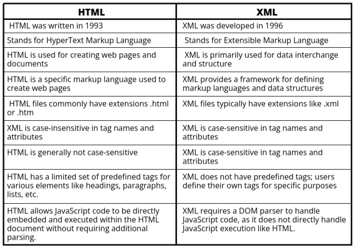

XML
- XML stands for eXtensible Markup Language.
- XML is designed to store and transport data.
- XML was released in the late 1990s. It was created to provide an easy way to use and store
self-describing data. XML became a W3C recommendation in February 1998.
- XML is not a replacement for HTML because HTML is used for displaying data, while XML is designed to
carry data.
- XML is designed to be self-descriptive, meaning it uses tags to define the structure and meaning of the
data.
- XML tags are not predefined; you must define your own tags and structure according to the data you want
to represent.
- XML is platform-independent and language-independent, making it suitable for exchanging data between
different systems and applications.
Features and Advantages of XML
- XML is widely used in web development.
- The main features or advantages of XML are given below:
- XML separates data from HTML. When displaying dynamic data in an HTML document, editing the
HTML each time the data changes can be cumbersome. With XML, data can be stored in separate
XML files, allowing focus on using HTML and CSS for display and layout. With a few lines of
JavaScript code, you can read an external XML file and update the data content of your web
page.
- XML simplifies data sharing in real-world computer systems and databases by containing data
in compatible formats. XML data is stored in plain text format, providing a
platform-independent way of storing data.
- XML simplifies data transport, addressing one of the most time-consuming challenges for
developers: exchanging data between incompatible systems over the internet.
- XML simplifies platform changes: upgrading to new systems is always time-consuming as large
amounts of data must be converted. XML data is stored in text format, making it easier to
expand or upgrade to new operating systems, applications, or browsers without losing data.
- XML facilitates data validation and error handling through Document Type Definitions (DTD)
and XML Schemas, ensuring data integrity and accuracy.
- XML supports hierarchical data structures, allowing complex data relationships to be
represented and processed efficiently.
- XML is extensible and customizable, allowing developers to define their own tags and
structure data according to specific requirements.
Disadvantages of XML
- Complexity: XML can be complex to read and write, especially for beginners.
- Verbosity: XML documents can be verbose, meaning they use a lot of tags which can make them
large in size.
- Processing Overhead: Parsing XML can require more processing power and memory compared to other
data formats.
- Human Readability: While XML is designed to be readable by humans, its structure can sometimes
make it challenging to understand quickly.
- Structured Data Only: XML is best suited for structured data, and handling unstructured data can
be less efficient.
- Less Suitable for Large Data Sets: For very large data sets, XML may not be the most efficient
choice due to its overhead in terms of size and processing.
Is XML Still Recommended in Modern Times?
XML continues to be widely used and recommended in many scenarios, especially for data
interchange and structured data storage. However, it is important to consider some of the
drawbacks and challenges associated with XML:
- XML can be verbose, leading to larger file sizes compared to more compact data formats like
JSON (JavaScript Object Notation).
- Processing XML documents can be resource-intensive, especially for large datasets, impacting
performance in some applications.
- XML does not support circular references in data structures, which can be a limitation in
certain scenarios.
- XML lacks built-in support for data types, requiring additional validation and parsing logic
to ensure data consistency.
- In some modern web development contexts, alternatives like JSON or binary formats are
preferred due to their lighter weight and ease of use.
Applications of XML
- Data Interchange
XML is commonly used for data interchange between different systems and platforms. Its
platform-independent nature makes it ideal for sharing data across diverse systems.
Example: Web services often use XML-based protocols like SOAP (Simple Object Access
Protocol) to exchange information between a client and a server.
- Web Development
XML is used to separate data from presentation in web applications. It allows developers to store
data in a structured format and use technologies like XSLT (Extensible Stylesheet Language
Transformations) to transform XML data into HTML or other formats.
Example: RSS feeds are XML files that provide a standardized way for websites to publish
updates, such as blog posts or news articles.
- Configuration Files
Many software applications use XML files for configuration settings. These files can be easily
read and modified by both humans and machines, making them suitable for storing configuration
information.
Example: Apache web server uses httpd.conf, an XML-based configuration
file, to define its settings.
- Document Storage and Publishing
XML is used for storing and publishing documents in a standardized format. This is particularly
useful for large-scale document management and electronic publishing.
Example: DocBook is an XML-based markup language designed for authoring books, articles,
and technical documentation.
- Database Interaction
XML can be used to transfer data between databases and applications. Some databases support XML
data types and can store and query XML data directly.
Example: SQL Server and Oracle support XML data types and provide functions to query and
manipulate XML data within the database.
- Mobile Applications
XML is used in mobile applications for data storage, configuration, and communication. It helps
in structuring data that needs to be shared between the app and the server.
Example: Android applications use XML for defining user interface layouts and
configurations.
- Business-to-Business (B2B) Transactions
XML is extensively used in B2B applications to facilitate the exchange of business documents such
as invoices, purchase orders, and shipping notices between trading partners.
Example: Electronic Data Interchange (EDI) standards like ebXML (Electronic Business
using XML) use XML for exchanging business documents.
- Scientific Applications
XML is used in scientific research for storing and sharing structured data, enabling researchers
to exchange complex datasets in a standardized format.
Example: The Bioinformatics community uses XML formats like Bioinformatics Sequence
Markup Language (BSML) to store and share biological data.
- Financial Services
XML is used in the financial industry for reporting and regulatory compliance. It provides a
standardized format for representing financial data.
Example: XBRL (eXtensible Business Reporting Language) is an XML-based standard for
financial reporting used by businesses and regulatory agencies.
Difference between HTML and XML

XML File and Syntax
An XML (eXtensible Markup Language) file is a text-based format used for storing and transporting
structured data. It typically uses the file extension .xml to indicate that it contains
XML-formatted data.
The syntax of an XML file follows a set of rules and conventions to define its structure and content.
Let's break down the syntax starting with the declaration:
<?xml version="1.0" encoding="ISO-8859-1"?>
In this declaration:
- <?xml indicates that this is an XML declaration.
- version="1.0" specifies the XML version being used. In this case, it's version 1.0.
- encoding="ISO-8859-1" specifies the character encoding used in the XML file.
ISO-8859-1
(Latin-1) is a widely used character encoding for Western European languages.
Following the XML declaration, we have the root element, which acts as the container element for all
other elements in the XML file:
<root>
<child1>Content of child 1</child1>
<child2>Content of child 2</child2>
</root>
In this example:
- <root> is the root element, and it contains two child elements:
<child1> and <child2>.
- The content within each child element is enclosed in opening and closing tags, such as
<child1>Content of child 1</child1>.
The syntax of XML is based on using tags to mark up data, with each tag representing an element and its
content. Tags must be properly nested, and elements can have attributes for additional information:
<person>
<name>John Doe</name>
<age>30</age>
<email>johndoe@example.com</email>
</person>
In this example:
- <person> is an element.
- The content within <name>, <age>, and
<email> elements represents data associated with the person.
XML Tree
- An XML tree is a hierarchical structure used to represent data in XML format.
- It consists of elements organized in a parent-child relationship, forming a tree-like structure.
- The top-level element in an XML tree is called the root element, which contains all other
elements.
- Each element can have child elements, attributes, or text content.
- Elements can be nested within each other, creating a hierarchy that represents the relationships
between different parts of the data.
- Attributes provide additional information about elements, such as metadata or properties.
- Text content within elements represents the actual data stored in the XML document.
- XML trees are used to organize and store structured data in a format that is both human-readable
and machine-understandable.
- XML trees can be visualized using tree diagrams or represented in textual form using indentation
to show the hierarchy.
Example of an XML Tree:
<students>
<student>
<name>John Doe</name>
<email>johndoe@example.com</email>
<age>25</age>
</student>
<student>
<name>Jane Smith</name>
<email>janesmith@example.com</email>
<age>22</age>
</student>
<student>
<name>Michael Johnson</name>
<email>michael@example.com</email>
<age>28</age>
</student>
</students>
Design an XML document that contains email information of 5 students.
<?xml version="1.0" encoding="UTF-8"?>
<students>
<student>
<name>John Doe</name>
<email>john.doe@example.com</email>
</student>
<student>
<name>Jane Smith</name>
<email>jane.smith@example.com</email>
</student>
<student>
<name>Michael Johnson</name>
<email>michael.johnson@example.com</email>
</student>
<student>
<name>Emily Brown</name>
<email>emily.brown@example.com</email>
</student>
<student>
<name>David Wilson</name>
<email>david.wilson@example.com</email>
</student>
</students>
XML DTD (Document Type Definition)
- An XML DTD is a formal declaration of the elements, attributes, and structure of an XML document.
- It defines the rules and constraints that XML documents must follow to be considered valid according
to a specific document type.
- A DTD is typically defined in a separate file with a .dtd extension and is referenced within XML
documents using a DOCTYPE declaration.
- DTDs specify the elements that can appear in the document, the order in which they can appear, and
the attributes they can have.
- They also define entity references, which allow the reuse of common content or text within XML
documents.
- DTDs are used to ensure consistency, validity, and interoperability of XML documents within a
particular domain or application.